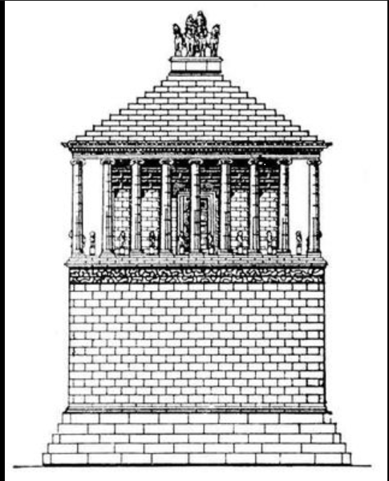
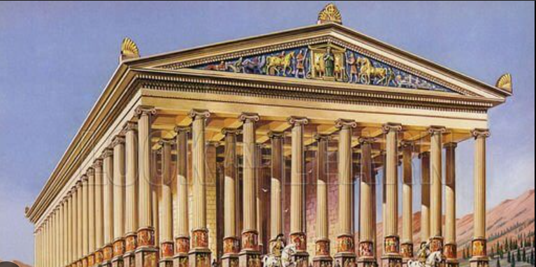
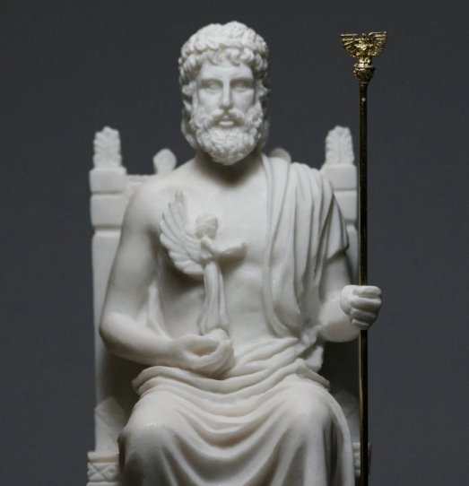
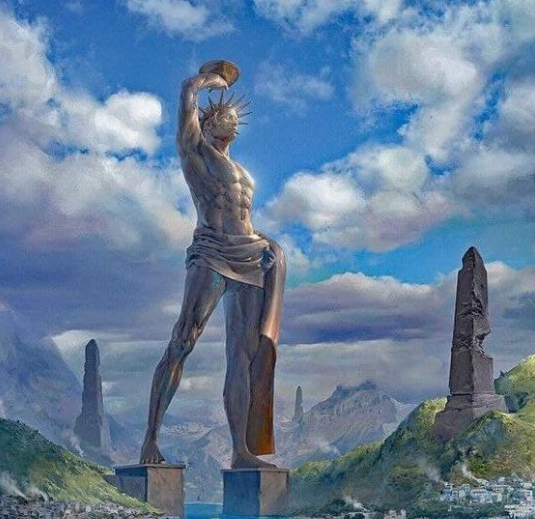

Galereya

Misr ehromlari
Misr ehromlari qadimgi Misr fir’avnlari uchun qurilgan ulkan maqbaralardir. Eng mashhuri — Giza ehromlari hisoblanadi. Ular miloddan avvalgi 2600-yillarda qurilgan.

Galikarnas maqbarasi
Hozirgi Turkiya hududida joylashgan. Bu maqbara podsho Mavsol uchun qurilgan.U juda bezakli haykallar va ustunlar bilan bezatilgan bo‘lib, keyinchalik zilzila tufayli vayron bo‘lgan.
Iskandariya mayoqi
Bu bog‘lar Bobil shahrida joylashgan deb taxmin qilinadi. Ular podsho Navuxodonosor II tomonidan rafiqasi uchun qurilgan deyiladi.Bog‘lar bir necha qavatli qilib qurilgan va sun’iy sug‘orish tizimiga ega bo‘lgan.

Artemida ibodatxonasi
Turkiyaning Efes shahrida joylashgan. U yunon ma’budasi Artemidaga bag‘ishlab qurilgan.miloddan avvalgi 550-yillarda qurilgan.Ibodatxona marmardan qurilgan va o‘z davrining eng katta ibodatxonalaridan biri bo‘lgan.
Semiramida bog‘lari
Bu bog‘lar Bobil shahrida joylashgan deb taxmin qilinadi. Ular podsho Navuxodonosor II tomonidan rafiqasi uchun qurilgan deyiladi.Bog‘lar bir necha qavatli qilib qurilgan va sun’iy sug‘orish tizimiga ega bo‘lgan.

Zevs haykali
Bu haykal Yunonistonda joylashgan Olimpiya shahrida bo‘lgan. U mashhur haykaltarosh Fidiy tomonidan yaratilgan.Haykal oltin va fil suyagidan yasalgan bo‘lib, balandligi taxminan 12 metr bo‘lgan.

Gelios haykali
Rodoss orolida qurilgan ulkan bronza haykal. Quyosh xudosi Gelios tasviri edi. U taxminan 30 metr balandlikda bo‘lgan, ammo zilzila natijasida qulab tushgan.
5. Iskandariya mayoqi qayerda joylashgan?
6. Zevs haykali qaysi shahrida joylashgan?
7. Galikarnas maqbarasi qayerda joylashgan?